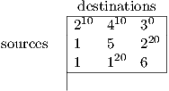

This homework will not be collected or graded.
Questions based on Kupferschmid, Chapter 6 (available on LMS):
- 6.6.45 (lecture 17): use the method in Lecture 18 to find an initial bfs and then solve the
problem.
- 6.6.50 (lecture 17): use the network simplex method from class. For an initial BFS, take the
optimal solution given on page 216, modified so that x15 is nonbasic at its upper bound, and
x45 is basic. Note that just one edge has a capacity constraint, so this is the only variable
that can be nonbasic at its upper bound. Note also that rhs values give net demand in the
book while the notes use net supply.
- 6.6.54 (lectures 16 and 17): Assume all edge lengths are positive. Hint: one approach is to
map each node in the shortest path problem to one source node and one destination node in
the transportation problem. You then have to choose the edge lengths so that the solution to
the assignment problem gives an optimal solution to the shortest path problem.
- (Lecture 18) Use the augmenting path algorithm of lecture 18 to find the maximum flow from node
1 to node 6 in the graph, where the edge capacities are indicated.
- (Lectures 16 and 18) A transportation problem has optimal transportation tableau

- Find an optimal dual solution, and verify it is dual feasible.
- Assume the supply at source 3 changes to 20+t and the demand at destination 1 changes
to 10+t. Use the dual solution to determine the change in the optimal value for small
values of t. For what range of t is your answer accurate?
In addition, read Chapter 6 from the text.
Solving the homework problems (and other problems from the text) will improve your understanding of
the material.
Working out the problems yourself will greatly improve your understanding of the material and help you
on the exams.
You can ask questions on piazza, in addition to using office hours or email.